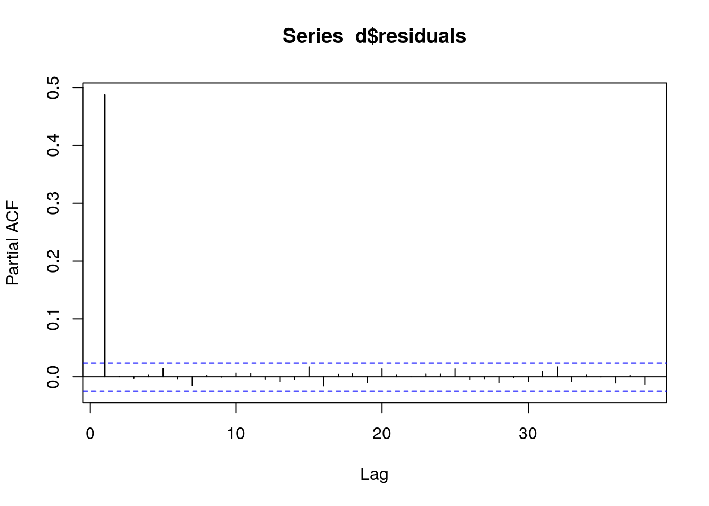
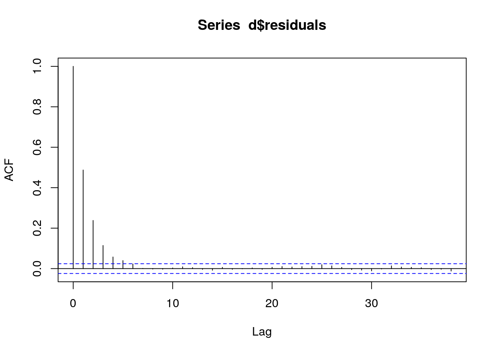
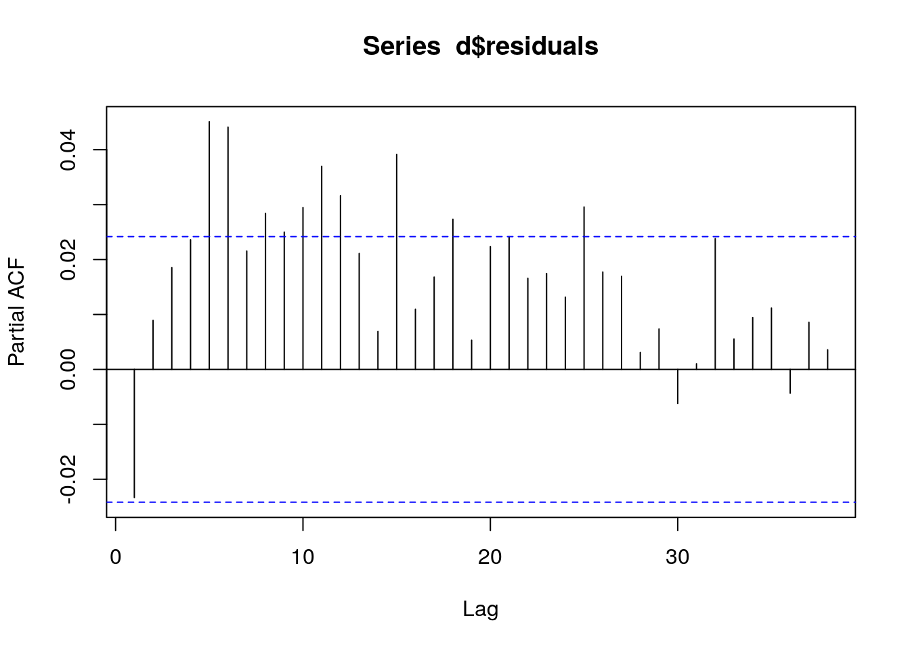
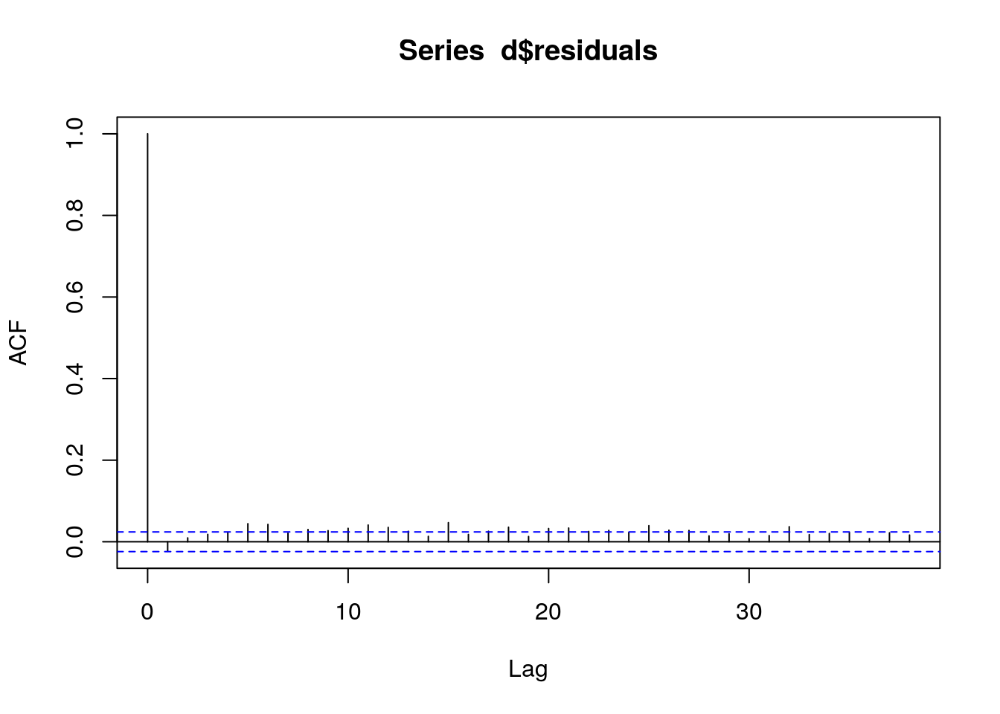

Chapter 10 Solutions
10.1 Exercise 2
library(data.table)
d <- fread("data/exercise_2.csv")
fit0 <- MASS::glmmPQL(y~yearMinus2000 + numberOfCows, random = ~ 1 | fylke,
family = poisson, data = d)## iteration 1## iteration 2fit1 <- MASS::glmmPQL(y~season + yearMinus2000 + numberOfCows, random = ~ 1 | fylke,
family = poisson, data = d)## iteration 1
## iteration 2## iteration 3print(lmtest::lrtest(fit0, fit1))## Likelihood ratio test
##
## Model 1: y ~ yearMinus2000 + numberOfCows
## Model 2: y ~ season + yearMinus2000 + numberOfCows
## #Df LogLik Df Chisq Pr(>Chisq)
## 1 5
## 2 8 3summary(fit1)## Linear mixed-effects model fit by maximum likelihood
## Data: d
## AIC BIC logLik
## NA NA NA
##
## Random effects:
## Formula: ~1 | fylke
## (Intercept) Residual
## StdDev: 0.08342256 1.298934
##
## Variance function:
## Structure: fixed weights
## Formula: ~invwt
## Fixed effects: y ~ season + yearMinus2000 + numberOfCows
## Value Std.Error DF t-value p-value
## (Intercept) 0.8483946 0.05053613 6565 16.78788 0.0000
## seasonSpring 0.9334080 0.00685147 6565 136.23480 0.0000
## seasonSummer 1.9312703 0.00621739 6565 310.62400 0.0000
## seasonWinter -0.0822382 0.00841368 6565 -9.77434 0.0000
## yearMinus2000 0.2004222 0.00104237 6565 192.27503 0.0000
## numberOfCows 0.0005788 0.00077223 6565 0.74954 0.4536
## Correlation:
## (Intr) ssnSpr ssnSmm ssnWnt yM2000
## seasonSpring -0.097
## seasonSummer -0.106 0.793
## seasonWinter -0.079 0.586 0.646
## yearMinus2000 -0.268 0.000 0.000 -0.002
## numberOfCows -0.070 -0.002 -0.018 0.004 -0.020
##
## Standardized Within-Group Residuals:
## Min Q1 Med Q3 Max
## -5.44473503 -0.49365704 -0.05256441 0.39697143 16.32534219
##
## Number of Observations: 6573
## Number of Groups: 3d[,residuals:=residuals(fit1, type = "normalized")]
pacf(d$residuals)
acf(d$residuals)
fit1 <- MASS::glmmPQL(y~season + yearMinus2000 + numberOfCows, random = ~ 1 | fylke,
family = poisson, data = d,
correlation=nlme::corAR1(form=~dayOfSeries|fylke))## iteration 1## iteration 2## iteration 3summary(fit1)## Linear mixed-effects model fit by maximum likelihood
## Data: d
## AIC BIC logLik
## NA NA NA
##
## Random effects:
## Formula: ~1 | fylke
## (Intercept) Residual
## StdDev: 0.08328798 1.319938
##
## Correlation Structure: AR(1)
## Formula: ~dayOfSeries | fylke
## Parameter estimate(s):
## Phi
## 0.5525116
## Variance function:
## Structure: fixed weights
## Formula: ~invwt
## Fixed effects: y ~ season + yearMinus2000 + numberOfCows
## Value Std.Error DF t-value p-value
## (Intercept) 0.9283222 0.05561940 6565 16.69062 0.000
## seasonSpring 0.8631442 0.01224757 6565 70.47476 0.000
## seasonSummer 1.8166993 0.01098229 6565 165.42086 0.000
## seasonWinter -0.1394364 0.01488823 6565 -9.36554 0.000
## yearMinus2000 0.2001812 0.00197415 6565 101.40142 0.000
## numberOfCows 0.0004206 0.00057695 6565 0.72909 0.466
## Correlation:
## (Intr) ssnSpr ssnSmm ssnWnt yM2000
## seasonSpring -0.155
## seasonSummer -0.171 0.784
## seasonWinter -0.123 0.574 0.621
## yearMinus2000 -0.464 0.000 0.000 -0.002
## numberOfCows -0.049 0.001 -0.006 0.004 -0.007
##
## Standardized Within-Group Residuals:
## Min Q1 Med Q3 Max
## -5.03056012 -0.54478730 -0.04721577 0.46011628 15.05853958
##
## Number of Observations: 6573
## Number of Groups: 3d[,residuals:=residuals(fit1, type = "normalized")]
pacf(d$residuals)
acf(d$residuals)
10.2 Exercise 3
library(data.table)
d <- fread("data/exercise_3.csv")
fit0 <- lme4::glmer(y ~ yearMinus2000 + numberOfCows + (1|fylke), family = poisson, data = d)
fit1 <- lme4::glmer(y ~ season + yearMinus2000 + numberOfCows + (1|fylke), family = poisson, data = d)## Warning in checkConv(attr(opt, "derivs"), opt$par, ctrl = control
## $checkConv, : Model failed to converge with max|grad| = 0.0013139 (tol =
## 0.001, component 1)print(lmtest::lrtest(fit0, fit1))## Likelihood ratio test
##
## Model 1: y ~ yearMinus2000 + numberOfCows + (1 | fylke)
## Model 2: y ~ season + yearMinus2000 + numberOfCows + (1 | fylke)
## #Df LogLik Df Chisq Pr(>Chisq)
## 1 4 -10144.4
## 2 7 -1794.9 3 16699 < 2.2e-16 ***
## ---
## Signif. codes: 0 '***' 0.001 '**' 0.01 '*' 0.05 '.' 0.1 ' ' 1summary(fit1)## Generalized linear mixed model fit by maximum likelihood (Laplace
## Approximation) [glmerMod]
## Family: poisson ( log )
## Formula: y ~ season + yearMinus2000 + numberOfCows + (1 | fylke)
## Data: d
##
## AIC BIC logLik deviance df.resid
## 3603.8 3634.6 -1794.9 3589.8 593
##
## Scaled residuals:
## Min 1Q Median 3Q Max
## -3.4683 -0.6176 -0.0064 0.5895 3.1431
##
## Random effects:
## Groups Name Variance Std.Dev.
## fylke (Intercept) 0.005643 0.07512
## Number of obs: 600, groups: fylke, 3
##
## Fixed effects:
## Estimate Std. Error z value Pr(>|z|)
## (Intercept) 0.0817819 0.0707498 1.16 0.248
## seasonSpring 1.0213789 0.0246508 41.43 <2e-16 ***
## seasonSummer 2.0118660 0.0220035 91.43 <2e-16 ***
## seasonWinter -0.0001082 0.0294244 0.00 0.997
## yearMinus2000 0.2019749 0.0038745 52.13 <2e-16 ***
## numberOfCows -0.0045764 0.0028115 -1.63 0.104
## ---
## Signif. codes: 0 '***' 0.001 '**' 0.01 '*' 0.05 '.' 0.1 ' ' 1
##
## Correlation of Fixed Effects:
## (Intr) ssnSpr ssnSmm ssnWnt yM2000
## seasonSprng -0.225
## seasonSummr -0.276 0.756
## seasonWintr -0.200 0.565 0.633
## yearMns2000 -0.708 -0.020 0.008 -0.011
## numberOfCws -0.200 0.025 0.038 0.053 -0.005
## convergence code: 0
## Model failed to converge with max|grad| = 0.0013139 (tol = 0.001, component 1)